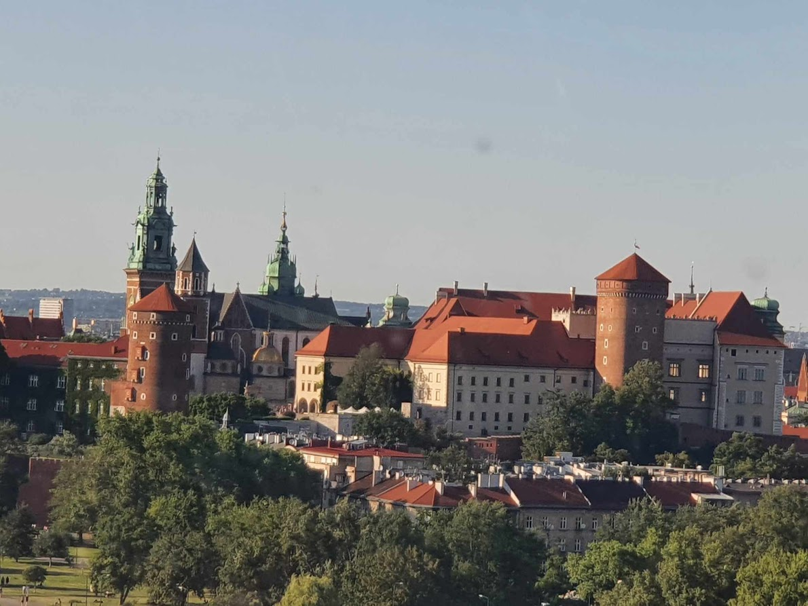
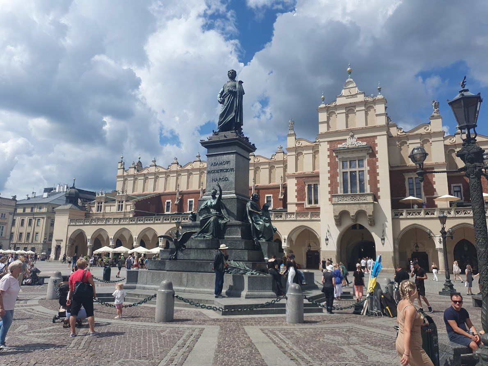

HISTORIE MĚSTA
Počátky města Krakova jsou spjaty s českým knížectvím. Popravdě o této historii toho příliš nevíme, snad jen to, že právě tehdy se v Krakově začalo pěstovat víno a vznikly zde první vinice. Když první polský kníže Měšek I. přijal křesťanství od Čechů v roce 966, hlavním městem Polska bylo Hnězdno. Krakov a jeho okolí připojil k Polsku až jeho syn Boleslav I. Chrabrý, nicméně i nadále zůstávalo Hnězdno hlavním sídlem státu.
Důvodem proč se hlavní město přestěhovalo do Krakova byl tak trochu český kníže Břetislav. Po smrti polského krále Boleslava se Břetislav rozhodl vyplenit Hnězdno a hlavně získat pozůstatky svatého Vojtěcha. Totiž po smrti Vojtěcha jeho mrtvé tělo odkoupil od Prusů Boleslav a pochoval ho v hlavní městě polského království. Díky tomu bylo v roce 1000 Hnězdenské biskupství povýšeno na arcibiskupství a polská církev získala samostatnost. Toho chtěl docílit i Břetislav. Proto vyplenil Hnězdno a následně převezl svatého Vojtěcha do Prahy a pochoval ho v katedrále svatého Víta. To se ale nepovedlo, papež odmítl povýšit Prahu a ta si musela počkat na církevní nezávislost až do roku 1344.
Hlavní město Polska však bylo v troskách, a proto se polský vládce Kazimír I. Obnovitel rozhodl v roce 1039 přenést hlavní město právě do Krakova, jelikož si chtěl posílit moc nad tímto uzemím a město bylo velmi dobře rozvinuté. Nicméně teprve až 20. ledna 1320 se v historii města stala událost, která napořád změnila historii. Právě tehdy byl poprvé na Wawelu korunován polský král Vladislav Lokýtek a Krakov se tak stal korunovačním městem polských králů. Lokýtek byl také jakožto první polský vládce pochován na Wawelu.
Jeho syn Kazimír III. Veliký se velmi zapsal do historie státu, jelikož zdědil dřevěný a zanechal zděný. Kazimír budoval moderní stát, založil ve městě první polskou univerzitu (Jagellonská univerzita) a zakládal nová města. Právě tehdy byla u Krakova založena dvě nová města. Kleparz a město, které pojmenoval po sobě – Kazimierz. Kazimír také pozval do Polska Židy z celé Evropy, odkud prchali kvůli pogromům. Židé se ve velkém počtu začali usazovat na Kazimierzu, a tak navždy změnili město. Na Kazimierzu vznikla židovská čtvrť, která následně získala "Privilegium de non tolerandis christianis". Toto privilegium znamenalo, že křesťané v této čtvrti nesměli žít, pracovat a nic vlastnit, takže židovská komunita se tu po staletí rozvíjela nerušeně. Najdeme tu spousta synagog, na ulici Szerokiej mikve, můžete tu sníst košer jídlo a komu by to snad bylo málo, tak si tu může nechat udělat tradiční obřízku.
Jenomže později moc krále začala upadat a naopak ve státě získávala větší moc šlechta. Polsko se nasledně transformovalo v Rzeczpospolitu a polská šlechta získala veškerou moc ve státě. Poloha Krakova začala překážet. Polsko byl obrovský stát sahající od Baltského moře až do Černého moře a sejm složený ze šlechty držel zákonodárnou moc a šlechtici na sejm museli dojíždět z celé země. Krakov se nacházel na úplné zeměpisné periferii této ohromné země. V roce 1596 král Zikmund III. Vaza rozhodl o přenesení hlavního města trochu blíže do centra země – do Varšavy. Krakov si však nadále uchovával význam. Stále se jednalo o korunovační město a nekropoli vládců země.
Po trojím dělení Polska a po napoleonských válkách se z Krakova stal městský stát jako "Svobodné, nezávislé a striktně neutrální město Krakov s okresem". Jakožto jediné polské nezávislé území se Krakov stal kulturním a politickým centrem Poláků. Ačkoliv bylo město v roce 1946 anektováno Habsburskou monarchií a jeho autonomie byla značně omezena, tak se stále jednalo o nejsvobodnější polské země, jelikož polské části pod Pruskem a Ruskem na tom byly nesrovnatelně hůře. To potvrzuje i fakt, že ve městě na konci 19. století bylo založeno Národní muzeum. Po získání nezávislosti Polska po první světové válce se tento význam ještě umocnil, jelikož byl Krakov považován jako tradiční polské město.
Kupodivu nacisté považovali Krakov jako tradiční německé město, a tak po obsazení Polska německou armádou se Krakov stal sídlem Generálního gouvernementu, a tedy i rezidencí Hanse Franka, který úřadoval přímo ze sídla polských králů na Wawelu. Město bylo přejmenováno na Krakau, Wawel na Krakauer Burg a rynek na Adolf Hitler Platz. Nacistická okupace město silně poničila a to hlavně židovskou stránku města. Ze 68tisícové městské židovské populace se konce války dožila jen necelá tisícovka lidí. Nejdříve Židé byli donuceni opustit tradiční Kazimierz a byly nahnáni do nově vytvořeného ghetta na Podgórzu. Po dvou letech bylo ghetto zlikvidováno a jeho obyvatelé byli přestěhování do koncentračního tábora v Płaszowie. Nicméně mnoho Židů z Polska se podařilo také v Krakově zachránit a to převážně díky Oskaru Schindlerovi.
Do dnešních dní stále Krakov platí za významnou kulturní metropoli země. Díky této bohaté historii se tu nachází spousta památek, zajímavých míst a také je město spjato z mnoha zmámými lidmi. Jsou zde pohřbeni dva nositelé Nobelovi ceny za literaturu – Czesław Miłosz a Wisława Szymborská. Narodil se zde izraelský Walt Disney Joseph Bau a v krakovském ghettu bydlel oskarový režisér Roman Polański a v roce 1993 zde natáčel Steven Spielberg jeden ze svých nejznámějších oskarových snímků Schindlerův seznam.